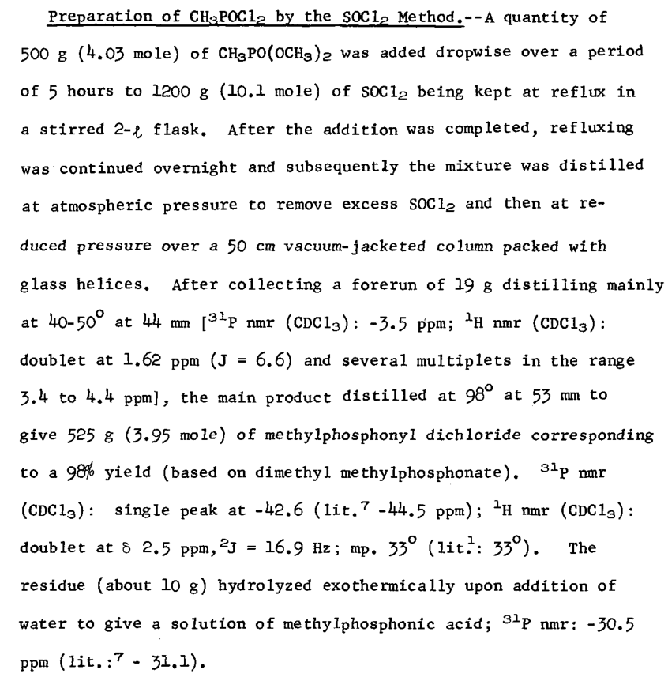

Preparation of elemental phosphorous (Summation).html (112.2 KB)
甲基二氯化膦的合成方法_朱凤香.pdf (114.9 KB)
甲基二氯化膦的合成方法概述_谭锦.pdf (205.5 KB)
methylphosphine.pdf (1.2 MB)
另参见CN106565779A、CN105669748B
PROCESS FOR MAKNG METHYLPHOSPHONC DICHLORDE
US4871486.pdf (482.7 KB)
A Convenient One-Step, High-Yield Preparation of Methylphosphonyl Dichloride from Dimethyl Methylphosphonate
moedritzer1974.pdf (365.4 KB)
